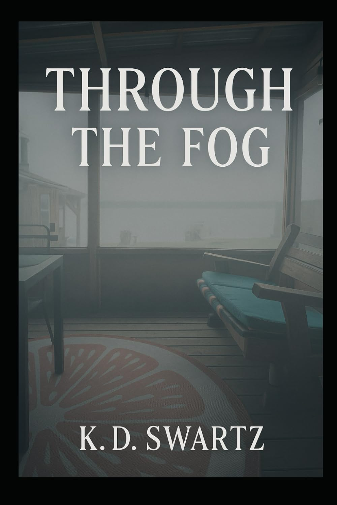

Healing prompts & reflections
For processing the shock of betrayal and infidelity.
A Guided Journal & Workbook
Through the Fog is your lifeline through heartbreak. More than just a book, it is a guided journal and workbook designed to help you process betrayal trauma, reclaim your self-worth, and rebuild your life with clarity and strength.

When betrayal hits, it doesn’t knock gently — it shatters.
Whether it’s infidelity, separation, or the sudden blindside of a partner walking away, the devastation can leave you wondering how to breathe, how to heal, and how to move forward.
You are not broken. You are awakening.
Inside the book
Five parts, written to be worked through slowly — at whatever pace the day allows.
For processing the shock of betrayal and infidelity.
To break free from gaslighting, confusion, and emotional chaos.
For setting boundaries, practicing self-love, and rebuilding self-esteem.
To help you regain your power and move forward with confidence.
To explore your story and begin your journey of recovery.
Whether you are recovering from cheating, divorce, or a sudden separation, this companion offers gentle guidance and empowering strategies to help you find your footing again.
Take the first step →Readers
I picked up this book by K. Swartz out of curiosity, even though I’m not currently going through a separation with a cheating partner. I was pleasantly surprised by how much I could still appreciate it. The author shares personal experiences with honesty and vulnerability, which makes the guidance feel genuine and relatable.
What stood out to me most were the well-thought-out worksheets and journaling prompts. Even as someone not in the exact situation this book is written for, I found the exercises and reflections to be meaningful and adaptable to other areas of life and relationships.
K. Swartz has clearly put a lot of care and effort into creating a resource that supports readers through an incredibly difficult chapter. For those experiencing betrayal or separation, I imagine this book would feel like a compassionate, steady hand to hold along the way.
Very relatable! Having gone through a similar experience, I can echo several key points that truly hit home:
- He is almost certainly cheating.
- He checked out long before you realized it.
- Most importantly—GET A LAWYER. Protect yourself and your children.
I applaud the author for bravely sharing her story, reliving her trauma, and putting her experience into words in an effort to help others avoid the same pain. This book is not only validating but also a powerful reminder to prioritize self-protection and strength.
Paperback
Your Companion for Rebuilding After Betrayal, Infidelity, and the Separation Blindside
$10.10CAD on Amazon.ca
Buy on Amazon.caAlso available as a printable journal in the Cedar North Etsy shop.
Product details
You are not alone — and there is life, love, and hope waiting on the other side of the fog.
Buy on Amazon.ca — $10.10